Hamburg & Bremen, Germany
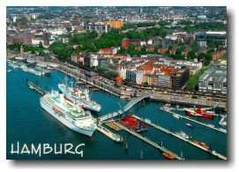 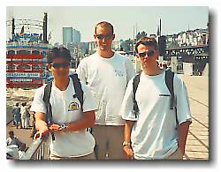
|
Hamburg & Bremen, Germany 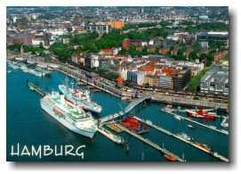 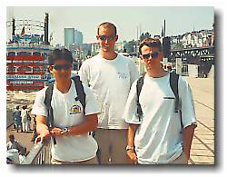 |
|
Trip #2: Saturday May 29 - Sunday May 30, 1999 Hamburg deserved more than 2 days, but that's all we had and that's all we gave. Off we were again on another weekend trip. It was as organized as any trip that is planned a day in advance. 4 of us (Paul, Ben, Ryan, and I) hopped on a train Saturday morning hoping that it was destined for Hamburg, but agreed that we’ll spend the day elsewhere if that’s where the train took us. But our shining armour came through again. In Hamburg we were, ready to conquer another city. 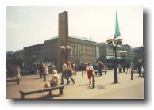Hamburg is a wealthy city known for its harbour. Well, depending on who you talk to, it may be better known for its red-light district. They say it’s second only to Amsterdam’s. So we began by doing the default touristy stuff. You know, walking around pretending that we fit in with the locals, only to be humbled every time we looked in our wallet. 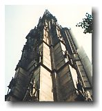Our first destination, St. Nikolaikirche Spire. It was bombed in 1943, but according to my Let’s Go Germany book, it has been left unrestored in memorial of the horrors of war. So, what do we see when we get there? The place is under restoration. In memorial of the war huh? 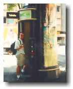The automated public washroom everywhere in Hamburg was pretty cool. Although I was never in it, apparently the washroom completely cleans itself out before the next person enters. I guess when you pay to go to the bathroom, you want the place to be clean. Speaking of paying to go to the bathroom, I had to pay everywhere I went. Everywhere that was appropriate that is. 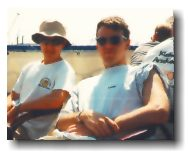After meandering here, eating there, and strolling everywhere, we thought we’d reward ourselves with a relaxing boat tour of the harbour. The recorded tour information would have been interesting, if we would have understood a single German word that was being said. Other than that, it was a nice way to enjoy the sunny weather. 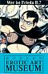Next stop, Hamburg’s red-light district, the Reeperbahn. And what would be a more appropriate museum to visit at the Reeperbahn than the Erotic Arts Museum? Contrary to the name though, it was in very good taste. 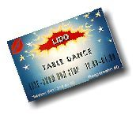After dinner half way across the city in Sternshanze, we were back at the Reeperbahn. We entered a strip bar (that’s all there were) where beer was guaranteed to be only 10DM (~$8). As soon as we sat down and ordered our mandatory beer, we reluctantly allowed the waitresses to sit down with us. After being friendly with us, they asked us if we’d buy them a drink. As slick they were, they weren’t going to fool me. I quickly said no. They were gone in a flash. We then looked at the drink menu. Sure enough, drinks other than beer were in the area of 150DM. Believe me, they weren’t going to order the 10DM beer. Well, I shouldn’t get too cocky because I had to learn from my mistake in Pigale, Paris when I was 16. But that’s another story. The bar was boring as can be, so we left. Sunday was filled with more touristy stuff. As non-touristy as we wanted to look, the combination of our backpacks, our cameras, and our German dictionary wasn’t going to fool anyone. We crossed the Elbe river in the Old Elbe Tunnel. There is an elevator at both ends of this tunnel that raises and lowers pedestrians and cars. So the tunnel is pretty much horizontal. This tunnel seems environmentally friendly because there’s no need to dig into land well before the river. But because the elevator can only transport a couple of cars at a time and it takes about 2 min. every time, I won’t be proposing this idea as a replacement for the Lion’s Gate bridge. But if anyone else wants to get ridiculed, feel free to do so. |
| Next was the Fishmarket. Very very big. It went for kilometers. | 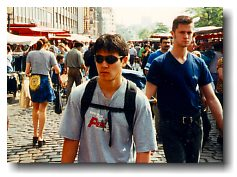 |
| 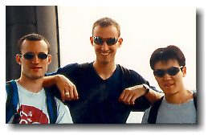 | Afterwards, we visited and climbed the tower of St. Michael’s Church. We had to see it because Let’s Go Germany described it as the "Mack Daddy" of all Churches in Hamburg. Let’s Go Travelling books are all written by Harvard Students. It's little quotes like "Mack Daddy" that makes me wonder if even I'm qualified for Harvard. | 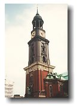 |
| The last event in Hamburg was a Canal boat cruise. Boy, we were sure liking the boat cruises. | 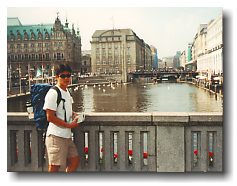 |
| Overall, Hamburg is a really nice city. It doesn’t have the history that Berlin does, but it has enough sights to keep even the most demanding people busy for several days. It’s a city that you must visit if you’re passing by. |
|
On the way back to Hannover, we stopped at Bremen for a couple of hours. It was a nice city. If a picture speaks a thousand words, I need not say more. 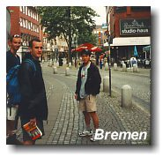 |
 johnnyo@canada.com
johnnyo@canada.com